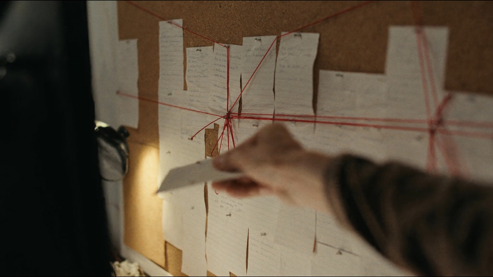
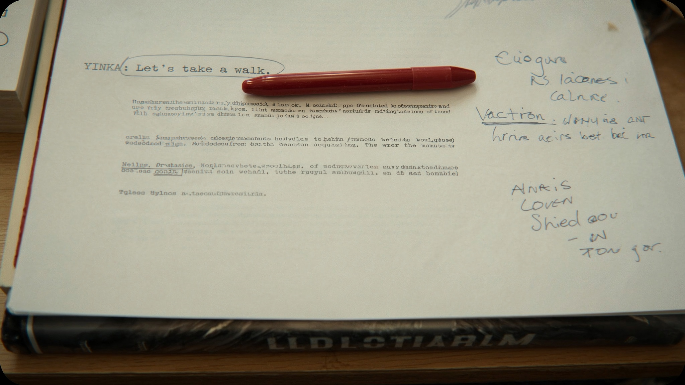
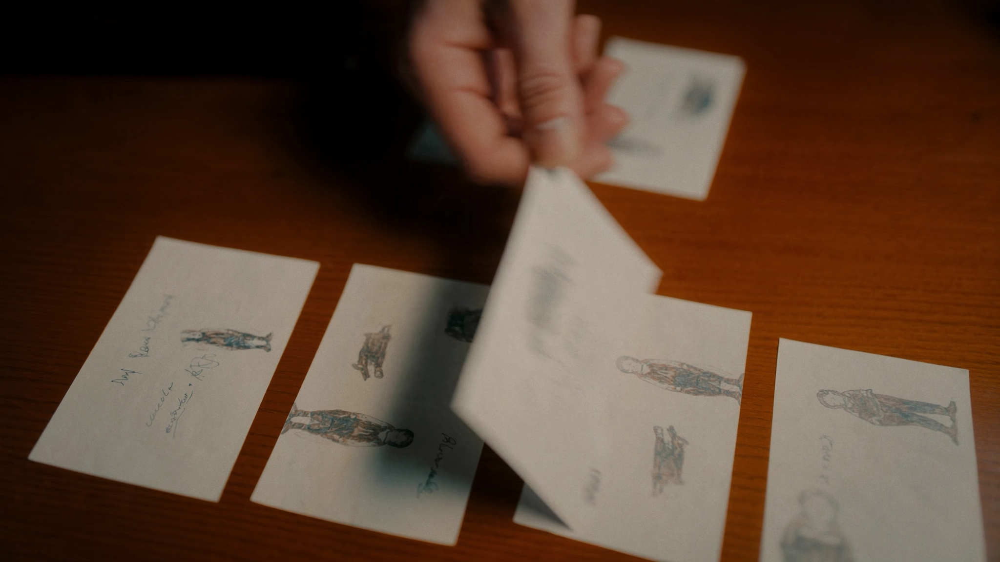
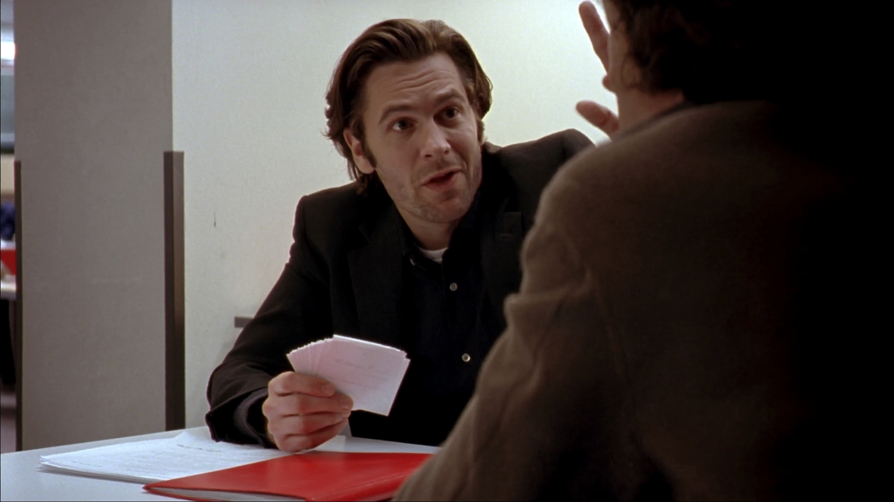

LE SCÉNARISTE
Structure, personnage, dialogue, formatage — l'art de faire tenir un monde entier dans 90 à 120 pages que quelqu'un doit avoir envie de tourner.
Page 1 / 90
Le scénario n'est pas de la littérature. C'est un plan de construction.
Un roman se lit. Un scénario se lit deux fois : une fois par le lecteur, une fois par cent quatre-vingts personnes qui vont devoir en faire un film. Chaque ligne inutile coûte de l'argent réel à quelqu'un.
📄 Ce qu'il produit
Un document technique lisible en une heure par page, format Courier 12, qui décrit uniquement ce qui se voit et s'entend — jamais ce que pense un personnage.
🎯 Sa vraie compétence
Compresser : faire tenir une psychologie entière de personnage dans une action, un objet, une réplique de six mots.
✂️ Son ennemi
L'attachement. Chaque scène magnifique qui ne sert pas l'histoire doit mourir — c'est le vrai sujet du chapitre 07.
Neuf chapitres, du pitch à la voix d'auteur.
Le pitch et la logline
Si tu ne peux pas résumer ton histoire en une phrase, c'est qu'elle n'est pas encore claire pour toi non plus. La logline contient un protagoniste, un objectif concret, un antagoniste ou obstacle, et un enjeu.
- Quand [événement déclencheur], [protagoniste] doit [objectif], sinon [enjeu].
Écris 3 loglines pour 3 films différents
- Choisis 3 films que tu connais bien.
- Résume chacun en une phrase, avec la formule ci-dessus.
- Fais-les lire à quelqu'un sans dire le titre — est-ce que ça donne envie ?
La structure en trois actes

La structure en trois actes n'est pas une prison créative — c'est un squelette. Le beat sheet de Blake Snyder la découpe en 15 beats précis, de l'image d'ouverture à l'image finale, chacun avec une fonction dramatique.


Reconstruis un beat sheet
- Choisis un film que tu connais par cœur.
- Sur 15 cartes (ou post-it), écris un beat par carte.
- Étale-les sur une table — vois-tu la mécanique à nu ?
Le personnage et son désir
Tout bon protagoniste veut deux choses différentes : ce qu'il croit vouloir (want, souvent extérieur et concret) et ce dont il a vraiment besoin (need, souvent intérieur et émotionnel). L'histoire les fait se percuter.
Sépare les deux désirs d'un personnage
- Invente un personnage en 2 phrases.
- Écris son want (ce qu'il poursuit activement) et son need (ce qui le guérirait vraiment).
- Imagine une scène où obtenir le want l'éloigne du need.
Le formatage professionnel

Un scénario mal formaté se repère en 5 secondes et finit rarement lu. Une page en Courier 12 = environ une minute de film — c'est pour ça que le format n'est pas cosmétique, il sert à budgéter un tournage avant même le premier jour.
| Élément | Règle |
|---|---|
| Scene heading | INT./EXT. — LIEU — MOMENT, toujours en majuscules |
| Action | Présent, ce qui se voit uniquement, pas de pensées internes |
| Nom du personnage | Majuscules, centré, avant chaque réplique |
Passe du roman au scénario
- Prends un court passage d'un roman (3-4 phrases avec dialogue).
- Réécris-le au format scénario — supprime tout ce qui n'est ni visible ni audible.
Le dialogue qui sonne juste
Personne, dans la vraie vie, ne dit exactement ce qu'il pense. Le bon dialogue cache autant qu'il révèle. Si tes personnages disent tout ce qu'ils ressentent, ton dialogue explique — il ne dramatise pas.
Écris une rupture sans le mot "rupture"
- Écris une scène de rupture amoureuse de 8 répliques.
- Interdiction d'utiliser les mots "aimer", "quitter", "fini", "rompre".
Entrer tard, sortir tôt

La plupart des scènes commencent trop tôt (on voit les personnages arriver, s'installer) et finissent trop tard (on voit la conséquence évidente). Coupe au dernier moment possible, quitte dès que le point est fait.
Élague une scène existante
- Reprends une scène que tu as déjà écrite (ou une scène de film transcrite).
- Coupe la première et la dernière réplique. La scène fonctionne-t-elle encore ?
La réécriture : tuer ses chouchous
Le premier jet sert à découvrir l'histoire. La réécriture sert à la servir — même si ça veut dire supprimer la réplique la plus brillante que tu aies jamais écrite parce qu'elle ralentit la scène. "Kill your darlings" n'est pas une punition, c'est un tri.
Coupe ta meilleure phrase
- Relis un texte que tu as écrit récemment.
- Trouve la phrase dont tu es le plus fier.
- Supprime-la. Le texte est-il plus faible, ou juste différent ?
Le pitch oral et la note d'intention

Un scénario ne se défend pas seul. Savoir le pitcher en 60 secondes, et écrire une note d'intention qui explique pourquoi ce film et pourquoi maintenant, fait souvent la différence entre un tiroir et un tournage.
60 secondes, chrono
- Pitche ton histoire à voix haute, minuté à 60 secondes.
- Enregistre-toi. Réécoute — où t'essouffles-tu ? Où perds-tu le fil ?
Trouver sa voix d'auteur
La structure et le format sont communs à tous. Ce qui distingue un scénariste, c'est ce qui l'obsède — les questions qu'il pose toujours, les types de personnages qu'il revisite. Voir la section « Approches d'auteurs » ci-dessous.
Nomme ta question récurrente
- Relis 3 histoires que tu as commencé à écrire, même abandonnées.
- Cherche la question qui revient — c'est probablement ton vrai sujet.
Trois écoles, trois façons de penser la structure.
La forme naît du contenu, jamais l'inverse. McKee refuse les formules toutes faites au profit de principes universels sur le conflit et le changement.
15 beats, à la page près. Une approche pragmatique et commerciale, pensée pour vendre un scénario à Hollywood — redoutablement efficace en diagnostic.
Le premier à avoir rendu la structure en trois actes accessible au grand public — la base sur laquelle presque tous les autres modèles se sont construits.
Bibliographie et ressources.
Le petit quiz de fin de parcours.
NIVEAU 1 — BASES1. Une logline doit contenir, au minimum :
NIVEAU 1 — BASES2. A combien de pages correspond environ une minute de film ?
NIVEAU 2 — APPLICATION3. La difference entre «want» et «need» d'un personnage :
NIVEAU 2 — APPLICATION4. «Entrer tard, sortir tot» dans une scene signifie :
NIVEAU 3 — ANALYSE5. Dans le beat sheet de Blake Snyder, a quoi sert le «catalyseur» ?
NIVEAU 3 — ANALYSE6. Pourquoi «tuer ses chouchous» fait-il partie de la reecriture ?
NIVEAU 4 — EXPERT7. En quoi l'approche de Robert McKee differe-t-elle de celle de Blake Snyder ?
NIVEAU 4 — EXPERT8. Pourquoi le formatage Courier 12 n'est-il pas qu'une question esthetique ?
NIVEAU 5 — MAÎTRISE9. Pourquoi la logline et la structure en beats doivent-elles rester coherentes tout au long de la reecriture ?
NIVEAU 5 — MAÎTRISE10. En quoi le formatage Courier et le principe «entrer tard, sortir tot» servent-ils le meme objectif economique ?